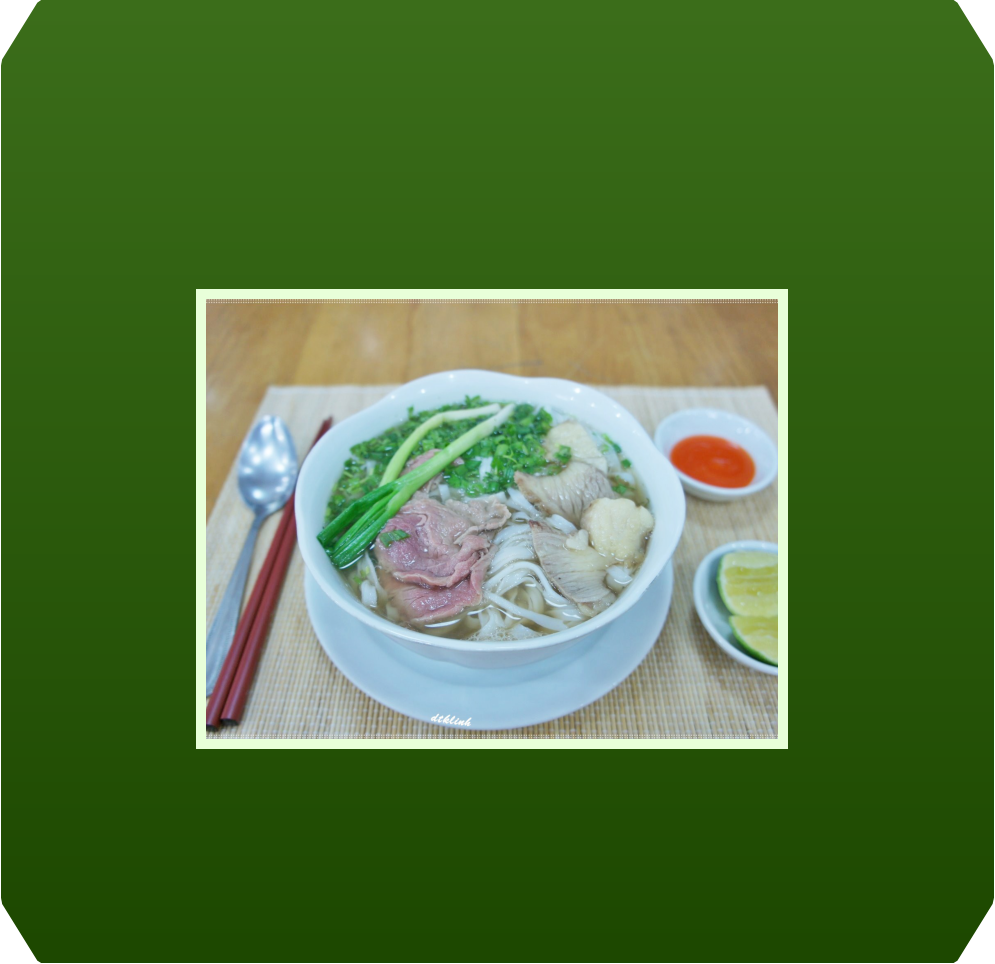
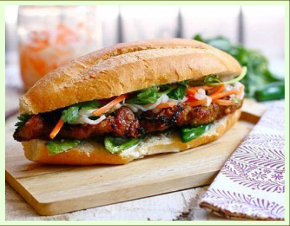
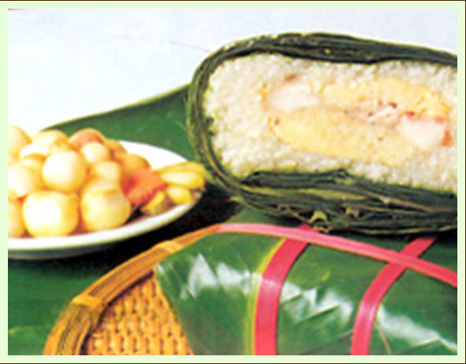

Designed by Lê Nguyễn Thanh Trúc
Design of Online Educational Resources. Instructor: Nguyễn Ngọc Vũ, Ph.D
Copyright © 2017. All rights reserved.


HISTORY AND FOOD
Neighbors have influenced the Vietnamese people in regards to what
they eat and how they cook. People from Mongolia who invaded
Vietnam from the north in the tenth century brought beef with them.
This is how beef became part of the Vietnamese diet. Common
Vietnamese beef dishes are pho bo (Beef Noodle Soup) and bo bay
mon (Beef Cooked Seven Ways). The Chinese who dominated Vietnam
for 1,000 years taught the Vietnamese people cooking techniques such
as stir frying and deep frying, as well as the use of chopsticks. In the
south, neighboring Laos, Cambodia, and Thailand introduced such
ingredients as flat, Cambodianstyle egg noodles, spices, chili, and
coconut milk.
Beginning in the sixteenth century, explorers and traders introduced
foods such as potatoes, tomatoes, and snow peas. When the French
colonized Vietnam (1858–1954), they introduced foods such as
baguettes (French bread), pâté, coffee with cream, milk, butter,
custards, and cakes. In the 1960s and 1970s (Vietnam War era), the
U.S. military introduced ice cream to Vietnam when it contracted with
two U.S. dairies to build dozens of ice cream factories.

Pho consists of flat rice noodle, meat-based broth. The dish is usually
accompanied by basil, lime, chili, and other extras on the side so that
eaters can season the soup to their own taste. The balanced taste of
sweet, salty, spicy, and citrus are highly contagious; Pho usually
becomes an instant favorite for anyone visiting Vietnam.
Pho
No matter what time day or night, a steaming bowl of Pho noodle soup is
never hard to find in Vietnam. Just as Pad Thai in Thailand, this dish in
Vietnam is one of best delicious Vietnamese Food Pho in this country.
And everyone around the world always wants to eat Pho when they have
a chance to go to Vietnam.
People usually sell bread in small stalls on the street-side. Depending
on customer’s needs, the seller will offer lots of types. Common
varieties are chicken bread, omelet bread, shredded pork skin bread,
grilledpork bread, juicy crushed pork meatballs bread. If you are
vegetarian, you can enjoy it with vegetable and tofu. It is one of reasons
why traditional Vietnamese food is really delicious.

Banh Mi Vietnam (Traditional Vietnamese
Bread Food)
Bread is made with wheat and rice flour. This can be seen as a
combination of sandwich and baguette. Thinly sliced carrots, pickles,
cucumbers, liver pâté, mayonnaise and various meats are put into bread
and covered by a little soy or fish sauce.
This cake was invented by the 18th Prince of Hung Emperor in the
contest of looking for new Emperor. According to the legend, 3,000-
4,000 years ago, Prince Lang Lieu, made round and square cakes, the
Round cake (banh Day) symbolizing the sky and the Square cake
symbolizing the Earth (under the ancient Vietnamese perception), to be
offered on the occasion of Spring.
In the ancient conception, the Earth is square; hence this cake's shape
is square, too, to reflect the Earth shape. Since the cakes he offered
were of special meaning and delicious taste, Lang Lieu was selected to
be the next Emperor. Since then, in honor of this 18th Prince,
Vietnamese people always make and have Square cake in the Lunar
New Year.
Up to now, this Traditional Vietnamese Food has become the most
famous and irreplaceable food in Tet Holiday. This legend aims to
remind the next generations of the ancient tradition as well as the
primary of Chung cake. Besides, it emphasizes the important role of rice
and nature in water rice culture.

Vietnamese Square Cake (Bánh Chưng)
Square cake (Banh Chung) is the most popular and delicious Traditional
Vietnamese Food and irreplaceable cake of Vietnamese people in the Tet
Holidays and King Hung’s anniversary (10th March Lunar). For the
Vietnamese, making this cake is the ideal way to express gratitude to
their ancestors and homeland.